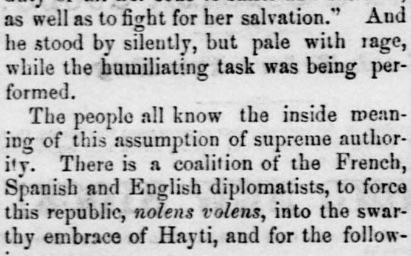

There is a coalition of the French, Spanish and English diplomatistsExiste una coalición de los diplomáticos franceses, españoles e ingleses
Holmes County Republican. Millersburg, Holmes County, Ohio, May 31, 1860. Page 4. View the originalVer el original

The Holmes County Republican reported on May 31, 1860, that a coalition of French, Spanish, and English diplomats was conspiring to force the Dominican Republic to unite with Haiti. According to the article, England sought to prevent white emigration to stop American progress, Spain desired to keep Americans away from Cuba, and France aimed to extend its 100-million-franc mortgage over the entire island to eventually colonize it using coolie labor.El Holmes County Republican informó el 31 de mayo de 1860 que una coalición de diplomáticos franceses, españoles e ingleses conspiraba para obligar a la República Dominicana a unirse con Haití. De acuerdo con el artículo, Inglaterra buscaba impedir la emigración de personas blancas para frenar el avance estadounidense, España deseaba mantener a los estadounidenses alejados de Cuba y Francia pretendía extender su hipoteca de 100 millones de francos a toda la isla para colonizarla finalmente mediante mano de obra culí.
FULL TEXT:TEXTO COMPLETO:
as well as to fight for her salvation.” And he stood by silently, but pale with rage, while the humiliating task was being performed.así como luchar por su salvación». Y se mantuvo en silencio, pero pálido de rabia, mientras la tarea humillante estaba siendo realizada.
The people all know the inside meaning of this assumption of supreme authority. There is a coalition of the French, Spanish and English diplomatists, to force this republic, nolens volens, into the swarthy embrace of Hayti, and for the follow-El pueblo todo conoce el significado interno de esta asunción de autoridad suprema. Hay una coalición de los diplomáticos francés, español e inglés, para forzar esta república, nolens volens, al abrazo moreno de Haití, y para el siguien-